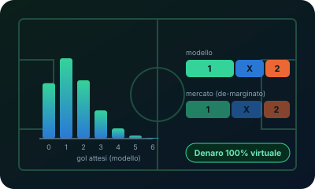
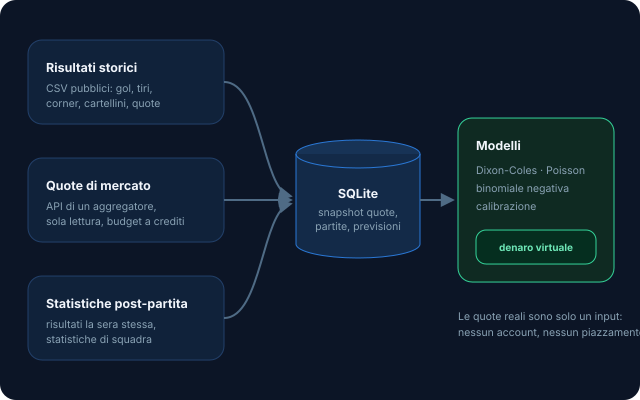
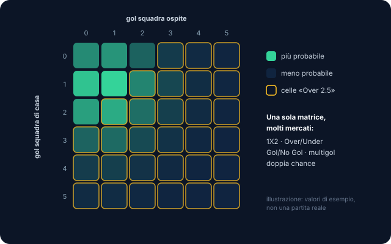
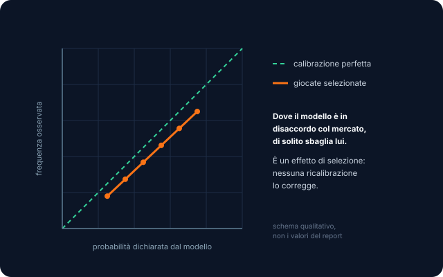

Simulazione e liquidazione
Confronto tra probabilità e quote, puntate virtuali da un bankroll simulato, liquidazione idempotente con i risultati reali su un registro contabile, cashout simulato con regole configurabili.
Un banco di prova per modelli previsionali: il sistema scarica dati di partite reali, stima probabilità con modelli statistici, le confronta con il mercato e simula le giocate con un bankroll interamente virtuale. Lo scopo è misurare quanto valgono i modelli, non vincere soldi.

È un progetto di dati e modellazione. Il vincolo è scritto nelle regole del repository e non è negoziabile:
Risultati e statistiche storiche arrivano da CSV pubblici; le quote di mercato da un aggregatore con API ufficiali, con un budget di richieste controllato dal sistema stesso; i risultati della sera da un'API di statistiche post-partita. Tutto finisce in un database SQLite locale, con gli snapshot delle quote storicizzati.

illustrazione · datiIl modello dei gol è un doppio Poisson con correzione Dixon-Coles, stimato per massima
verosimiglianza con scipy: produce la matrice di tutti i punteggi possibili, da
cui si derivano 1X2, Over/Under e gli altri mercati. Corner e tiri usano una binomiale
negativa, i cartellini un Poisson. Un modello per campionato, versionato nel database.

illustrazione · matriceIl backtest rigioca le stagioni passate come se fossero future, riaddestrando i modelli a intervalli regolari. La conclusione è chiara: il modello non batte le quote di chiusura del mercato, e nessuna ricalibrazione (Platt, isotonica, Platt con il mercato come variabile), fatta senza leakage, cambia le cose.
Il perché è la parte interessante: la sovrastima sulle giocate non è un difetto globale di calibrazione ma un effetto di selezione. Si gioca proprio dove il modello è in disaccordo con il mercato, ed è lì che di solito sbaglia lui.

illustrazione · calibrazioneAttorno ai modelli c'è un sistema completo che gira da solo ogni giorno, sempre con denaro finto.
Confronto tra probabilità e quote, puntate virtuali da un bankroll simulato, liquidazione idempotente con i risultati reali su un registro contabile, cashout simulato con regole configurabili.
Pagine server-side senza build: andamento del bankroll virtuale, schedine, modelli, CLV e backtest, con tema chiaro e scuro. Le pagine leggono il database in sola lettura.
Comandi typer per ogni fase (ingest, train, predict, settle, backtest) e timer
pianificati per generare, aggiornare e liquidare. Test pytest con dati finti.
Un monolite Python pulito, con moduli separati e nessuna dipendenza di machine learning pesante: tutto gira su CPU, su un portatile.
Il codice è privato. Se ti interessa il lato statistico (modelli, validazione, calibrazione) ne parlo volentieri.